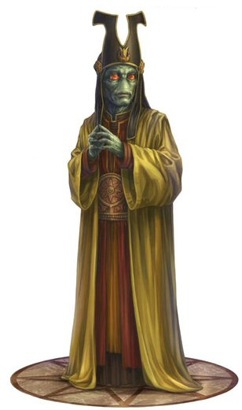

Neimoidian
neimoidian
Special Abilities: Neimoidians begin the game with one rank in either Deception or Negotiation. They still may not train Deception or Negotiation above rank 2 during character creation.
The Neimoidian species is an offshoot of the Duros, diverging physiologically and culturally after long isolation on the world of Neimoidia. Despite their shared ancestry with the ancient spacer culture of the Duros, Neimoidians have little in common with their adventurous cousins. Instead, their ruthless mercantile and colonial efforts earned them a reputation as conniving schemers, which was further cemented by the actions of the Trade Federation during the Clone Wars.
After years of Neimoidian-backed Separatists waging war on the Republic, the species has an overwhelmingly negative reputation for being cruel, cowardly, and weak-willed. Recently, Neimoidians have attempted to associate themselves with the Duros to redeem themselves in the eyes of the galaxy, but the Duros oppose the scheme at every opportunity. The Neimoidians might likely remain under the shadow of the Clone Wars until they can work alongside the Rebellion to put them right.
Neimoidians closely resemble their Duros cousins. Both species are smooth-skinned, hairless humanoids with large red eyes and blue-green skin, and both species hatch from eggs in a larval “grub” stage. A closer look reveals more gray tones in Neimoidian skin. Additionally, Neimoidians’ pupils split horizontally, and their distinct skeletal structure creates protrusions on their foreheads.
In the past, Neimoidian upbringing focused on competitive education, starting from the earliest period of youth. Young Neimoidians were typically raised by the government of their homeworld or another Neimoidian colony worlds. This instilled future leaders with the fierce competitive instinct they were thought to need. Food and other essentials were distributed in a communal pool for the young Neimoidians, and there was no oversight to prevent a few greedy individuals from taking all they desired, leaving little to nothing for others.
The Empire’s seizure of most Neimoidian assets after the Clone Wars and the destruction of many grub-hatcheries in battles of that period led some Neimoidian worlds to reconsider their society, shifting away from selfishness and rampant indulgence and toward a more modest and evenly structured system. Skeptics across the galaxy claim this is only because Neimoidians no longer have the resources to support their old lifestyles, but the fact remains that a new generation of Neimoidians was brought up with values different from their forebears. What they do with this new education remains to be seen.
The ancient Duros colony world of Neimoidia is far from an ideal habitat. It has a dim sun and high gravity, as well as dismal fogs throughout most of the year. Despite these disadvantages, the colonists eventually developed it into a thriving center of industry and expanded outward to a number of nearby worlds. These secondary colonies—known as the Neimoidian purse worlds—hold as much cultural significance for the species as Neimoidia itself. The most prominent purse worlds are Cato Neimoidia, Deko Neimoidia, and Koru Neimoidia, all of which were eventually developed to the point of becoming more desirable and hospitable destinations than the Neimoidian homeworld.
The Neimoidian language—known as Pak Pak—is commonly used among Neimoidians, but species who lack the throat structure of its native speakers cannot easily replicate the distinctive sharp croaks. Therefore, Neimoidians who spend time among other species learn to speak Basic. Neimoidians have little difficulty with Basic, though like many species with unique vocal structures, some speak it with a thick accent.
Neimoidians have as much if not more difficulty in the Rebel Alliance as they do elsewhere in the galaxy. Many Rebels blame the Trade Federation for creating the circumstances that led to the rise of the Empire. Some give Neimoidians the benefit of the doubt; they assume that they are carrying an old Separatist vendetta against the Empire, and treat them as enemies of the Rebellion’s enemy. Old stereotypes often surface to trouble Neimoidians serving the Alliance, but those who join typically do so on their own terms, refusing to let others define them.
Although Neimoidian culture makes them naturally suited for a life of careful wheeling and dealing in negotiations, not all Neimoidians turn to diplomatic work. Many turn their intellects toward engineering, maintaining, or improving the Rebel arsenal. Others enter combat duty, fighting against the Empire as well as the stereotypes others hold. Neimoidian combatants are still rare on the frontline, but not unheard of, and the Rebellion has its share of Neimoidian tacticians who have earned the respect of their soldiers.
Neimoidians occupy a volatile position in the galaxy. Whether they have inherited it from an older generation, or whether they were involved in its inception, all members of the species are currently tarnished with a reputation as amoral liars, cheats, and war profiteers. Freedom fighters in the Rebel Alliance might understand the burden of living under such a vilified name, but even so, not all of them are understanding. Outside the Rebellion, reactions may be even worse.
Neimoidian leaders are struggling to repair their damaged reputation, doing everything they can to distance themselves from the Trade Federation that was once their pride and glory. They have paid reparations to conquered worlds, submitted to Imperial rule, and attempted to ingratiate themselves with the more respected Duros. Flowever, Neimoidian leadership is still rife with members of their old order, even after the arrest of virtually every known Separatist in their government. Neimoidians might be unable to completely shed the burdens of the past. Flowever, if they can contribute to the Rebellion and help free the galaxy, their future could be brighter.